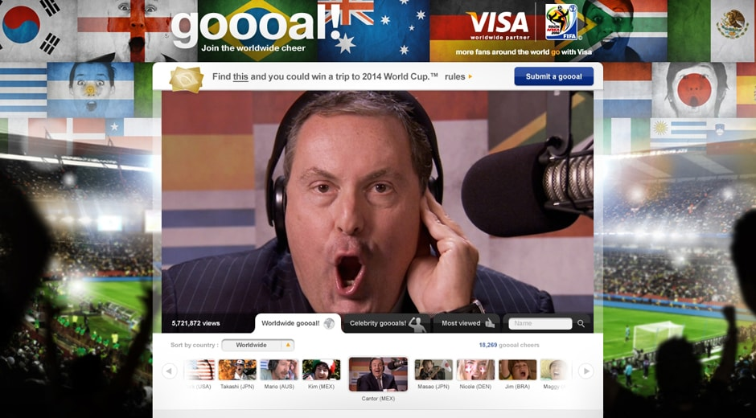

- 


We ran a World Cup-inspired sales promotion in every key shopping centre across the country. All people had to do was use their Visa card in any one of the retailers inside the complex and then bring their receipt to one our Visa World Cup manned hotspots for the chance to win instant football-themed prizes, and, to be automatically entered in to our major prize draw giving people the chance to win tickets to the World Cup final in Johannesburg, South Africa. To drive awareness of the promotion, we ran OOH Media inside each centre directing people to where the Visa hotspots were, and, ran regular games of human-size table football to get people engaged and excited.